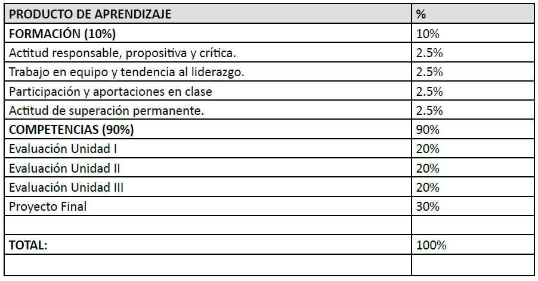

Programación Orientada a Objetos para Interactividad
Propósito general del curso
El propósito del curso de Lenguajes de Programación Orientada a Objetos (POO) para interactivos es que el estudiante aplique los principios de la programación orientada a objetos en la solución de problemas para el desarrollo de interactivos que puedan ejecutarse en diversas plataformas digitales a través del uso del lenguaje de programación C#. La materia permite al estudiante aplicar y desarrollar conocimientos adquiridos en la materia de métodos de programación y conectar dichos conocimientos con materias posteriores dentro del área de concentración desarrollo de aplicaciones.
Competencia general de la asignatura
Crear una aplicación interactiva de juego que se pueda ejecutar en diversas plataformas digitales, mediante la aplicación de los principios de diseño y programación orientado a objetos, reutilizando código y el uso de librerías estándar, que a su vez le permitan el desarrollo de código estructurado y de calidad con el propósito de dar solución de problemas y necesidades de interacción.
Evidencias de desempeño
| Conocimientos |
- Conocer la interfaz y las herramientas de desarrollo de interactivos en la plataforma de Unity
- Conocer el paradigma de Orientación a objetos para la solución de problemas dentro del desarrollo de videojuegos
- Conocer las herramientas de programación para la creación de aplicaciones interactivas dentro de la plataforma Unity
|
| Habilidades |
- Resolución de prácticas y ejercicios de programación donde se apliquen los conceptos de POO
- Resolución de proyectos específicos en equipo donde se organice, presente, analice e interprete la propuesta de solución al problema de interacción definido dentro de la plataforma de unity
- Elaboración de un proyecto final en donde se analice información y necesidades de interacciones definidas en la problemática y se desarrolle en equipo una propuesta de solución donde se implemente el desarrollo de una aplicación de juego multiplataforma
|
| Actitudes y valores |
- Resolución de problemas: pensamiento crítico, ingenio, creatividad e innovación en la búsqueda de soluciones a problemática planteadas.
- Trabajo en equipo: colaboración con comunicación efectiva, escucha activa y capacidad de negociación para la generación de ideas creativas con respeto y tolerancia a las diferencias y diversidad de opiniones.
- Gestión del tiempo y organización: planificación efectiva de proyectos y tareas para su concreción en tiempo.
- Adaptabilidad: capacidad de adaptarse a los cambios y capacidad para organizar carga de trabajo y adaptarse a nuevos entornos, con flexibilidad y disposición para salir de su zona de confort.
|
Unidad I: Básicos de programación en Unity
Competencias de la unidad
Aplica los conceptos básicos de programación mediante la solución de problemas en juegos de baja complejidad en interacción dentro de la plataforma de Unity.
Contenido
- 1.1. Interfaz y herramientas básicas de Unity
- 1.2. Lenguaje C# en Unity
1.2.1. Creación de scripts
1.2.2. Uso del editor de código Visual Studio
- 1.3. Conceptos de programación
1.3.1. Definición de variables
1.3.2. Uso y creación de métodos
1.3.3. Introducción a clases
- 1.4. Control de flujo y tipos de colecciones
1.4.1. Condicionales: if, switch
1.4.2. Colecciones: arreglos, listas
1.4.3. Iteraciones: for, for each, while
Unidad II: Programación Orientada a Objetos
Competencias de la unidad
Aplica el paradigma de orientación a objetos mediante la programación de clases predefinidas simples y de manejo de colecciones que permitan la solución de problemas para el desarrollo de juegos de mediana complejidad en interacción.
Contenido
- 2.1. Conceptos en la programación Orientación a Objetos
- 2.2. Definición de clases
2.2.1. Instanciar objetos
2.2.2. Usar constructores
2.2.3. Declaración de métodos de clase
- 2.3. Declaración de estructuras
- 2.4. Integración del paradigma de orientación a objetos
2.4.1. Encapsulación
2.4.2. Herencia
2.4.3. Composiciones
2.4.4. Polimorfismo
Unidad III: Desarrollo de Juegos en Unity
Competencias de la unidad
Diseña y desarrolla el nivel de un juego, utilizando la herramientas de Unity y su integración con clases predefinidas y clases propias, estas aplicadas para la solución de problemas en juegos de mediana complejidad en interacción.
Contenido
- 3.1. El documento de juego (GDD)
- 3.2. Construyendo un nivel
3.2.1. Creación de modelos primitivos
3.2.2. Materiales
3.2.3. Prototipado de nivel (white-boxing)
- 3.3. Básicos de iluminación
- 3.4. Animación en unity
3.4.1. Animación con código
3.4.2. Animación con la ventana de Animation en Unity
- 3.5. Movimiento del Jugador
- 3.6. Movimiento de la cámara
- 3.7. Uso del sistema de Física en Unity
- 3.8. Programando mecánicas de juego: saltar, disparar
- 3.9. Creación de interfaces del juego (GUI)
Recursos bibliográficos, apoyos y recursos didácticos
Bibliografía básica
- Ferrone, H. (2022). Learning C# by Developing Games with Unity (7th ed). Pack publishing
- Okita, A. (2019). Learning C# Programming with unity 3D (2nd ed). CRC Press/Taylor & Francis Group.
Bibliografía complementaria
- Nagel, C. (2021). Professional C# and .NET (8th ed.). Wrox.
- Sharp, J. (2022). Microsoft Visual C# Step by Step (10th Ed.). Microsoft Press.
Recursos electrónicos
Apoyos y recursos
- Herramientas de edición de imágenes
- Procesador de palabras y de presentaciones
- Plataformas: Blackboard, zoom
INSTRUMENTOS DE EVALUACION
- Actividades en clase y de tarea
- Proyectos parciales
- Exámenes/Quizzes
REQUERIMIENTOS GENERALES PARA EVALUACIÓN DE PARCIALES
- 60% ACTIVIDADES
- 10% ACTIVIDADES Y PARTICIPACION EN CLASE
- 30% PROYECTO DEL MES y/o EXAMEN
